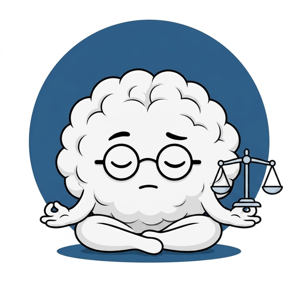
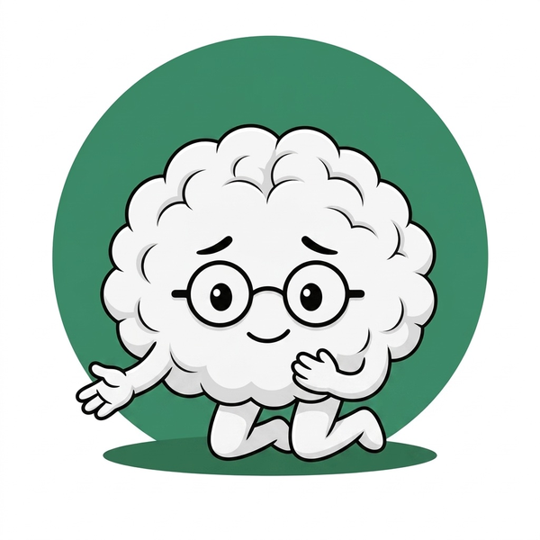
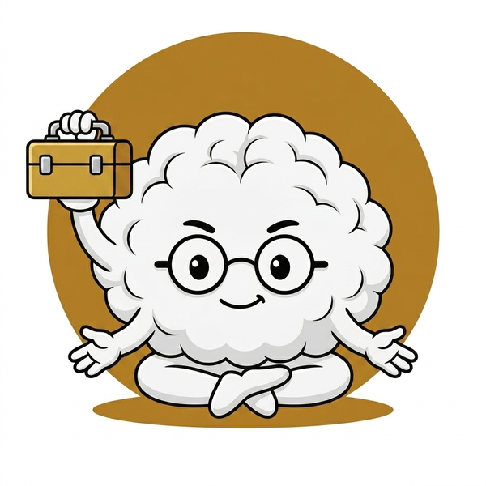
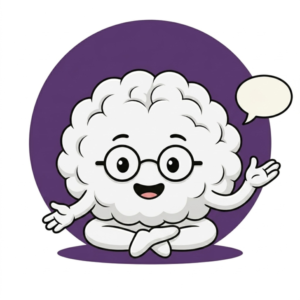
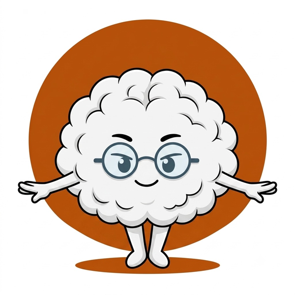

KLARTEXT Workbook
Reflexion · Transfer · Selbstcheck
10 Module · Deine Antworten bleiben während dieser Sitzung erhalten
Dein Fortschritt
Wie du dieses Workbook nutzt
Jedes Modul hat 4–6 Aufgaben: Reflexionsfragen, Praxis-Transfer und Selbstchecks. Deine Antworten werden automatisch in deinem Browser gespeichert — du kannst jederzeit weitermachen.
Tipp für die Dokumentation: Drucke die ausgefüllten Seiten mit Strg+P (Windows) oder Cmd+P (Mac) — alle Module werden ausgedruckt. Bearbeite das Workbook parallel zum Lernhandbuch — nicht alles auf einmal. Ein Modul pro Woche ist ein guter Rhythmus.
Modul 0
Systemelemente
Das Fundament — 9 Elemente im Überblick
0%
▼
Aufgabe 1 · Selbstreflexion
Welches der 9 Systemelemente klingt für dich am stärksten? Und welches macht dir noch Sorgen?
Barometer · kLAR · Joker · Brainy · Feuerwehr · Rollen · Humor · Abgrenzung · System
Aufgabe 2 · Barometer kennenlernen
Welche Barometer-Farbe zeigt das Kind das du begleitest am häufigsten? Was sind die typischen Frühwarnsignale?
Denke an konkrete Beobachtungen aus dem Schulalltag.
Aufgabe 3 · kLAR üben
Beschreibe eine konkrete Situation aus deinem Alltag — und wie du kLAR einsetzen würdest.
k = Kontakt & Körperliche Sicherheit · L = Leise & Langsam · A = Anerkennung & Atmen · R = Reizreduktion & Rückzug
Aufgabe 4 · Mein Joker
Entwickle deinen persönlichen Joker für das Kind das du begleitest. Was würde bei diesem Kind ein Muster durchbrechen?
Der Joker ist wirksam wenn er selten, unerwartet und authentisch ist.
Aufgabe 5 · Selbstcheck Systemelemente
Was davon hast du bereits in deiner Praxis?
Modul 0 abgeschlossen:
0%

Modul 1
Recht & Rolle
Rechtliche Grundlagen · Aufgaben · Grenzen
0%
▼
Aufgabe 1 · Mein Auftrag
Was steht in deinem Hilfeplan? Formuliere deinen Auftrag in eigenen Worten — so dass du ihn jemandem in 2 Sätzen erklären kannst.
Aufgabe 2 · Nicht-Aufgaben erkennen
Welche Aufgaben werden dir in der Praxis übertragen die eigentlich nicht zu deiner Rolle gehören? Wie reagierst du darauf?
Sei ehrlich — ohne Selbstkritik. Rollenentgrenzung passiert fast allen.
Aufgabe 3 · Schweigepflicht konkret
Gab es eine Situation wo du unsicher warst ob du etwas weitergeben darf oder nicht? Wie hast du entschieden?
Aufgabe 4 · Zusammenarbeit einschätzen
Wie ist deine Zusammenarbeit mit Lehrkraft, TK und Eltern gerade? Wo läuft es gut — wo gibt es Reibung?
Aufgabe 5 · Selbstcheck Recht & Rolle
Was hast du bereits sicher im Griff?
Modul 1 abgeschlossen:
0%

Modul 2
Kinder verstehen
Entwicklung · Neurobiologie · Beobachtung
0%
▼
Aufgabe 1 · Das Kind verstehen
Welcher Stressmodus ist bei dem Kind das du begleitest am häufigsten? Was löst ihn typischerweise aus?
Fight · Flight · Freeze · Fawn — oder eine Kombination?
Aufgabe 2 · Bindungsverhalten beobachten
Wie verhält sich das Kind dir gegenüber in der Beziehung? Welchen Bindungsstil erkennst du?
Sicher · Unsicher-vermeidend · Unsicher-ambivalent · Desorganisiert
Aufgabe 3 · Frühwarnsignale kennen
Beschreibe das persönliche Frühwarnsystem dieses Kindes — was zeigt es wenn das Barometer von Grün zu Gelb wechselt?
Aufgabe 4 · Stärken sehen
Was sind die Stärken dieses Kindes? Was kann es gut — was macht es gerne?
Stärken-Fokus ist kein Schönreden — es ist professionelle Haltung.
Aufgabe 5 · Selbstcheck Kinder verstehen
Was hast du bereits verinnerlicht?
Modul 2 abgeschlossen:
0%

Modul 3
Werkzeugkasten
40 Praxiswerkzeuge · Dein persönliches Repertoire
0%
▼
Aufgabe 1 · Meine Top-5-Werkzeuge
Welche 5 Werkzeuge aus dem Werkzeugkasten nutzt du am häufigsten — oder möchtest du öfter nutzen?
Aufgabe 2 · Atem-Anker ausprobieren
Hast du den Atem-Anker (4-7-8) selbst ausprobiert? Beschreibe deine Erfahrung — und wie du ihn mit dem Kind einführen würdest.
Aufgabe 3 · Rituale gestalten
Beschreibe das Ankomm-Ritual das du mit dem Kind nutzt oder aufbauen möchtest. Was soll es konkret enthalten?
Aufgabe 4 · Transfer in die Praxis
Welches Werkzeug willst du in den nächsten 2 Wochen neu einführen? Was brauchst du dafür?
Aufgabe 5 · Selbstcheck Werkzeugkasten
Was hast du bereits im Einsatz?
Modul 3 abgeschlossen:
0%

Modul 4
Kommunikation
Sprechen · Zuhören · Feedback · Konflikte
0%
▼
Aufgabe 1 · Ich-Botschaft üben
Formuliere eine schwierige Situation aus deinem Alltag als Ich-Botschaft um. Was hast du bisher gesagt — was wäre die Ich-Botschaft?
Schema: Ich sehe/höre/merke [Beobachtung] — und ich fühle [Gefühl] — weil [Bedürfnis]
Aufgabe 2 · Deeskalierende Sprache
Welche Sätze sagst du in Stresssituationen die eher eskalieren als deeskalieren? Wie könntest du sie ersetzen?
Aufgabe 3 · Feedback geben
Formuliere ein spezifisches Prozesslob für das Kind das du begleitest — für etwas das es diese Woche gut gemacht hat.
Konkrete Beobachtung + Wirkung benennen — kein „toll gemacht!"
Aufgabe 4 · Schwieriges Gespräch vorbereiten
Gibt es ein Gespräch das du führen müsstest aber vermeidest? Bereite es hier vor.
Aufgabe 5 · Einschätzung: Meine Kommunikation
Wie schätzt du deine Kommunikation aktuell ein?
Mit dem Kind
muss ich übenläuft gut
Mit der Lehrkraft
muss ich übenläuft gut
Modul 4 abgeschlossen:
0%

Modul 5
Dokumentation
Tagesdoku · Berichte · Datenschutz
0%
▼
Aufgabe 1 · Tagesdoku schreiben
Schreibe eine Muster-Tagesdokumentation für einen typischen Tag mit dem Kind das du begleitest.
Barometer-Verlauf · besondere Ereignisse · Interventionen · Soziales
Aufgabe 2 · Beobachtung vs. Interpretation
Formuliere drei Aussagen über das Kind um — von Interpretation zu Beobachtung.
Aufgabe 3 · Mein Datenschutz-Check
Wie sicher ist deine Dokumentationspraxis gerade wirklich?
Aufgabe 4 · Ein SMART-Ziel formulieren
Formuliere ein SMART-Ziel für das Kind das du begleitest — für die nächsten 4 Wochen.
Spezifisch · Messbar · Attraktiv · Realistisch · Terminiert
Modul 5 abgeschlossen:
0%

Modul 6
Krise & Mobbing
Erkennen · Handeln · Cybermobbing
0%
▼
Aufgabe 1 · Konflikt oder Mobbing?
Beschreibe eine soziale Situation die du beobachtet hast — und entscheide: Konflikt oder Mobbing? Begründe anhand der 3 Merkmale.
Wiederholung · Machtungleichgewicht · Absicht
Aufgabe 2 · Mein Handlungsablauf
Beschreibe in eigenen Worten was du tust wenn du Mobbing beobachtest — Schritt für Schritt.
Aufgabe 3 · Das Kind stabilisieren
Was würdest du zu dem Kind sagen wenn du weißt dass es gemobbt wird? Formuliere 3 konkrete Sätze.
Aufgabe 4 · Selbstcheck Modul 6
Was hast du bereits sicher?
Aufgabe 5 · Brainy-Geschichtenkarten nutzen
Die 30 Brainy-Geschichtenkarten (Sets A, B, C) helfen, Mobbing-Themen kindgerecht zu besprechen. Mit welchem Kind könntest du welches Set einsetzen — und warum?
Set A: Brainy erlebt Mobbing · Set B: Brainy hilft anderen · Set C: Brainy übt Strategien
Modul 6 abgeschlossen:
0%

Modul 7
Praxissituationen
Was tue ich wenn …? · 20 Handlungskarten
0%
▼
Aufgabe 1 · Meine schwierigste Situation
Welche Situation im Schulalltag ist für dich am herausforderndsten? Beschreibe sie — und wie du bisher reagierst.
Aufgabe 2 · Wutanfall — mein Drehbuch
Schreibe dein persönliches Drehbuch für den nächsten Wutanfall. Was tust du — Schritt für Schritt?
Körperlich sicher → Leise & Langsam → Akzeptanz → Raum schaffen → Warten → erst dann Gespräch
Aufgabe 3 · Arbeitsverweigerung konkret
Das Kind verweigert die Aufgabe. Was ist dein Kleinstschritt-Einstieg für dieses konkrete Kind?
Aufgabe 4 · Professionell bleiben
In welchen Situationen fällt es dir schwer professionell zu bleiben? Was hilft dir dabei?
Aufgabe 5 · Selbstcheck Praxissituationen
Was hast du bereits sicher im Griff?
Modul 7 abgeschlossen:
0%

Modul 8
Selbstfürsorge
Stressbewältigung · Grenzen · Team
0%
▼
Aufgabe 1 · Mein Stresssignal
Was ist dein persönliches erstes Stresssignal? Körper, Gedanken oder Verhalten — was kommt zuerst?
Aufgabe 2 · Meine Sofort-Strategie
Welche der 5 Sofort-Strategien passt am besten zu dir? Beschreibe wie du sie im Schulalltag konkret einsetzt.
4-7-8 Atmung · Füße spüren · Kaltes Wasser · 5-4-3-2-1 Grounding · Schultern loslassen
Aufgabe 3 · Meine Grenzen
Wo hast du gerade Schwierigkeiten Grenzen zu setzen? Formuliere einen konkreten Satz den du beim nächsten Mal sagen wirst.
Aufgabe 4 · Mein Selbstfürsorge-Plan
Welche drei konkreten Selbstfürsorge-Maßnahmen wirst du ab dieser Woche regelmäßig umsetzen?
Klein und realistisch — was du wirklich tust, nicht was du theoretisch tun solltest.
Aufgabe 5 · Aktueller Zustand — ehrliche Einschätzung
Wie geht es dir gerade — auf dem Barometer für dich selbst?
Aufgabe 6 · Selbstcheck Selbstfürsorge
Was davon ist bei dir bereits regelmäßig?
Aufgabe 7 · Meine Soforthilfe-Werkzeuge
Die Karten M8-13 bis M8-19 bieten kurze Sofort-Übungen (3-Minuten-Pause, Lachyoga, Humor-Notfallkoffer, Schildkröten-Technik). Welche davon hast du ausprobiert — und welche passt am besten zu dir?
Probier mindestens zwei Übungen aus den neuen Karten aus, bevor du diese Aufgabe beantwortest.
Modul 8 abgeschlossen:
0%

Modul Humor
Humor & Leichtigkeit
Wann er verbindet — wann er schadet
0%
▼
Aufgabe 1 · Mein Humor-Stil
Wie würdest du deinen natürlichen Humor-Stil beschreiben? Was kommt bei dir authentisch raus?
Aufgabe 2 · Barometer-Check für Humor
Beschreibe eine Situation wo du Humor eingesetzt hast und es gut funktioniert hat — und eine wo es nicht gepasst hat.
Aufgabe 3 · Meine Mikro-Intervention
Entwickle eine persönliche Humor-Mikro-Intervention für das Kind das du begleitest — klein, authentisch, für Grün/Gelb.
Absurde Übertreibung · gemeinsamer Fehler · Brainy-Geheimnis · Namensänderung · stilles Augenzwinkern
Aufgabe 4 · Selbstcheck Humor
Was hast du verinnerlicht?
Modul Humor abgeschlossen:
0%
Das Workbook ist ein Werkzeug — kein Prüfung.
Keine Antwort ist falsch. Jede ehrliche Antwort ist wertvoll. Und: Du musst es nicht in einer Sitzung durcharbeiten. Nimm dir Zeit — ein Modul pro Woche ist ein guter Rhythmus.
Klar. Warm. Menschlich.
© 2026 Anja Jolk | KLARTEXT-Mentoring · Alle Rechte vorbehalten
Spezial
Bindung · Pflegekinder · Hochkonflikt · Essstörungen
Reflexion zu M2-31 bis M2-34
S1
Beschreibe ein Kind das du begleitest (oder dir vorstellst) das Bindungslogik zeigt — extreme Nähe, extreme Distanz oder Kontrollverhalten. Was steckt deiner Meinung nach dahinter?
S2
Pflegekinder haben oft 10–20 Erwachsene die "zuständig" sind. Was bedeutet das für deine Rolle als INGRA? Wie kannst du Stabilität anbieten ohne das System zu überfordern?
S3
Stell dir vor ein Elternteil konfrontiert dich aggressiv und behauptet du hättest etwas gesagt was du nicht gesagt hast. Was sagst du — Wort für Wort? Schreibe deinen Satz auf.
S4
Wo ist für dich persönlich die Grenze zwischen professioneller Distanz und echter menschlicher Wärme? Wie hältst du beides in Balance?
S5
Du beobachtest ein Mädchen das seit Wochen kaum isst, friert und Pausen meidet. Was dokumentierst du — schreibe einen konkreten Beispieleintrag. Was tust du als nächstes?
S6
Was nimmst du aus den Spezialkarten M2-31 bis M2-34 für deinen Alltag mit? Was überrascht dich? Was bestätigt etwas das du schon wusstest?